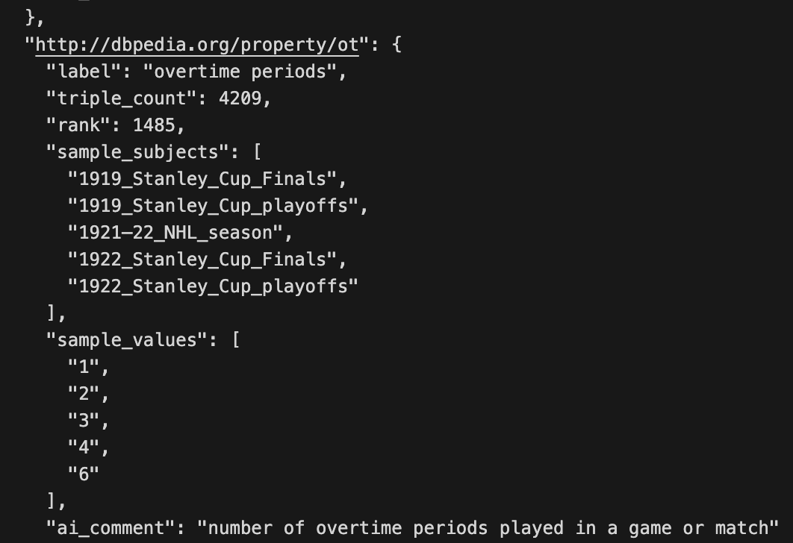
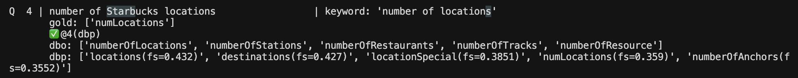
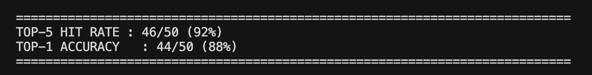

Coding Week 5
June 22 to June 28, 2026
Week 4 ended with improvements to the Query Builder and Query Executor committed, and two open tasks: the LangGraph transformation still pending, and a known gap in dbp property coverage that needed more work. This week I tackled both, and it turned out to be the most intense week of the project so far, I spent around close to 40 hours across the week between the two tracks.
LangGraph Transformation
The first priority was wiring the entire pipeline into a proper LangGraph StateGraph. This required three things: defining a shared state that all nodes read from and write to, extracting each pipeline stage into a standalone function that takes state as input and returns a partial update, and wiring those functions into a compiled graph with linear edges.
I defined a KGQAState TypedDict with fields for everything the pipeline carries across nodes: the question, the model, the analysis from the Planner, linked entities, ontology terms, the generated SPARQL, the execution result, and attempt counts. Each of the five node functions reads what it needs from the state and returns only the fields it updates.
class KGQAState(TypedDict):
"""Typed state that flows through all LangGraph nodes.
Each node receives the full state, performs its task, and returns
only the fields it updates. LangGraph merges updates back automatically.
"""
# Input
question: str
model: Optional[str]
# Planner node output
entities: list
concepts: list
answer_type: str
aggregator: str
join_type: str
has_type_filter: bool
# Entity Linker node output
linked_entities: dict
# Ontology Explorer + Schema Introspector node output
ontology_terms: dict
# Query Builder node output
sparql: str
# Query Executor node output
exec_result: dict
attempts: int
swap_attempted: boolThe five nodes are Planner, Entity Linker, Ontology Explorer, Query Builder, and Query Executor. The Ontology Explorer node also internally runs the Schema Introspector, so domain, range, and all dbp metadata gets appended to candidates before they reach the Query Builder. The graph is compiled once and reused across calls.
KGQAAgent.answer() was updated to invoke the compiled graph. Since the already existing CorporateKGQAAgent (designed for a seperate Corporate Dataset, beyond our project scope) is a subclass that overrides individual methods, routing it through the graph would bypass those overrides entirely. I added a type(self) is KGQAAgent guard so subclasses fall back to a _answer_sequential() method that preserves the original sequential behaviour. This shipped as three separate commits to the production repo.
Processing the DBp Property Dataset
The bigger challenge this week was the dbp index. The core problem is that DBpedia has two namespaces: dbo, which is a curated OWL ontology with clean English labels, and dbp, which is raw Wikipedia infobox extraction with 56,000+ properties, many of them abbreviated or poorly named. A query for "overtime" should ideally find dbp:ot even though "overtime" and "ot" have almost no textual overlap.
I downloaded the complete DBpedia Databus infobox dump (113M triples) and extracted per-property metadata for all 56k dbp properties including triple count, rank, sample subjects, and sample values. After filtering out dbo equivalents, URL-encoded names, single-character abbreviations, and properties with only symbol values, I was left with 48,957 clean dbp entries.
For label enrichment I used Qwen3 235B on my own AWS Bedrock account as a first pass to generate a short label and one-sentence description for each property using the sample subjects and values as context. For example, dbp:ot with sample subjects like "1919 Stanley Cup Finals" and sample values of 1, 2, 3 got labelled "overtime periods". A second pass with chain-of-thought reasoning cross-checked each label, and a third pass with Qwen 32B audited for hallucinations. The AI label is what makes abbreviated properties retrievable. Without it, dbp:ot embedded as just "OT" would never surface in the top-5 for an overtime query. Through this method of AI labelling, I managed to create a workable dbp metadata dataset for embedding. However this is not a 100% efficient process since AI labelling would introduce hallucinations which would be impossible for a human to manually review around 49k dbp properties.

Building the Two-Index Architecture
With the dbp entries processed and labelled, the next question was how to structure the index. The first thing I noticed was the scale imbalance. There are roughly 3,680 dbo properties and 48,957 dbp properties, which is about 1 dbo for every 13 dbp. If we mix both into a single index, the sheer volume of dbp entries buries the dbo results. A query for "birthplace" returns dbo:birthPlace at rank 1 with high cosine similarity, but that one result is competing against hundreds of dbp candidates that all have slightly lower scores, and the top-10 window quickly fills up with dbp noise.
The solution I came up with was to keep dbo and dbp as entirely separate indexes. At query time, the concept is passed to both indexes independently and each returns its own top-5. This keeps the results balanced, always 5 dbo candidates and 5 dbp candidates, and the Query Builder gets a clean structured view of both namespaces without either drowning out the other completely.

The Composite Scoring Formula
One issue with using a single similarity score for dbp is that rare properties with only 1-2 triples in the knowledge graph look identical to common properties with millions of triples at the embedding level. A property like dbp:placeOfDeath with 16 triples semantically matches "place of death" very well but is almost never the right answer since dbo:deathPlace is the canonical property for this concept.
I designed a composite scoring formula for the dbp index that incorporates triple count as a support signal:
final_score = cosine_similarity x log(triple_count + 1) / log(max_triple_count + 1)The key design decision here was to avoid any free hyperparameters. log(max_triple_count) is a constant derived from the data itself, it's not something tunable. This makes the formula scientifically defensible to anyone viewing it. The formula down-weights rare properties without removing them entirely, which is important because some legitimate properties genuinely appear on only a handful of Wikipedia pages. The dbo index just uses pure cosine similarity since it is already curated and there is no need for support weighting.
My mentors further confirmed in a Slack discussion that the formula seems to be working correctly, dbp:placeOfDeath being omitted in favour of dbo:deathPlace is exactly the right behaviour.
Benchmark Results
DB25 index evaluation: 99/100 top-5 hit rate, 90/100 top-1 accuracy.
DB26 index evaluation: 46/50 top-5 hit rate, 44/50 top-1 accuracy.
The four DB26 misses are edge cases: one involves a property that requires date arithmetic in the gold query, one is a data snapshot difference, and two are concept keywords that don't match any dbp property name even with AI labels.

Evaluation Pipeline and a Key Discovery
During end to end evaluation I discovered that our local Oxigraph instance has zero dbp: triples. Only dbo: ontology data is loaded. This means that every query that uses a dbp property would simply return empty on Oxigraph. I rebuilt the evaluation pipeline to run generated queries against the live DBpedia endpoint and pre-computed all 50 DB26 gold results by executing the gold SPARQL queries against the same live endpoint. This gives a fair apples-to-apples comparison since both sides use the same data source.
Running the first 10 DB26 questions with this setup: result-set match 50%, average F1 0.53. Several failures are questions whose gold queries also return empty on live DBpedia due to differences between the 2015 DBpedia snapshot used for the TEXT2SPARQL challenge (which is the proper method of evaluating DB26 questions on) and the current live endpoint.
Challenges
The most time-consuming part was the AI labelling pipeline for 48,957 dbp properties. Running three full passes on AWS required careful prompt engineering to get consistent output format across all properties. My mentors pointed out in the Friday meeting that some abbreviations like dbp:ot are genuinely ambiguous even with full context, meaning it can mean overtime periods in some games and overtime scores in others. This is a fundamental characteristic of messy DBpedia extraction rather than a labelling problem, and handling it properly is an ongoing direction for next week.
The Oxigraph discovery was also significant. It reframed a lot of the earlier evaluation work and revealed that our preference for dbo is actually correct, where both dbo:discoverer and dbp:discoverer return true for "Pluto and Clyde Tombaugh" question on the live endpoint, meaning our dbo-first approach gives the right answer regardless of which namespace the benchmark uses.
What's Next
Week 6 has two things to focus on. The first is finalising the ontology index approach, specifically exploring alternatives to AI labelling all 49k dbp properties since hallucinations at that scale are impossible to manually review.
The second is building the Validator node, which sits after the Query Executor and handles failure routing back to the Query Builder with enriched context from live DBpedia property probing. It will have a fixed number of retries. The Answer Generator node is also planned for Week 6 as the final node in the pipeline, taking the validated result set and generating a natural language answer.